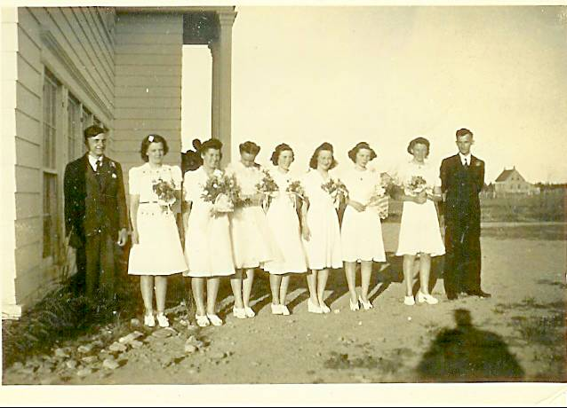

The Family Chronicle
No. 84 November 25, 2004
____________________________________________________________________

Miramichi Rural High School Graduating class in 1942. From left to right: Ken Glendenning, Lorna Watling, Bertha Fowlie, Isobel Williston, Jennie MacLean, Shirley MacDonald, Edith MacRae and Billy Gulliver
In 1939, Black River was served a community Hall, four one-room schools (Little Branch, Middle Black River (Cameron), Upper Black River and Victoria), the Miramichi Rural High School at Bayside (Miramichi) and two churches (St. Stephen’s United and St. Paul’s Presbyterian). The Community also had a community Hall and an active Agricultural Society, #103.
I had a conversation a few days ago with my
neighbour, Pete Paton, It turns out we have a Peters connection but we have not been able to establish a linkage between our families. His Grandmother, or was it Great Grandmother was a Peters who married one of the Cunards from the Miramichi. It is likely that, if we could go back another generation or two, we would find a family linkage.
I am told that the Peters of New Brunswick came from Ireland but that the name Peters in PEI comes from the French “Pitre”. I am not sure if the change was by accident or design.
Elmer A. Glendenning
Venetia's clippings included the following believed to have been taken from the Moncton Times. He died on May 18,1938:
"ELMER A. GLENDENNING, CHATHAM,
May 22, " The community of Black River and the Miramichi generally will learn with deep regret of the death of Elmer A. Glendenning at his home Black River Bridge. For fourteen years he had been the energetic secretary-treasurer of the progressive Agricultural Society of that district. For over a quarter of a century he had been a member of the Masonic Order; for 30 years enjoyed membership in the Oddfellows Craft and for the long period of 43 years was a member of the Loyal Orange Lodge.
Surviving are his wife (formerly Miss Jean Watling, of Black River) and nine children. There are four daughters, Mrs. Roy Smith of Medford, Mass., Mrs. Cameron Russell of Point Aux Carr, Lillian of Needham, Mass., and Elinor at home, an infant daughter, Margaret Virginia was buried in Hampton, Virginia in 1918; five sons, Walter, John, Kenneth, Norman and Don all at home.
The funeral of the late Mr. Glendenning was held yesterday afternoon at 2:30 o'clock with Dr. Genge of Calvin Church, Chatham, officiating. Interment was made in St. Stephen's Cemetery, Black River”.
Living Costs
According to records kept by my brother, Walter Glendenning, in 1947 he received 45 cents per pound for butter, 30 cents a dozen for eggs, $5.00 for a young pig and 55 cents per hour for work with New Brunswick Hydro.
Jane E. Glendenning
I have the following clipping, date and newspaper unknown but she died on March 25, 1964:
"DEATH MRS. E. GLENDENNING
CHATHAM (Special) - "The death of Mrs. Jean Elizabeth Jardine Glendenning, 74, widow of Elmer A. Glendenning of Black River Bridge, occurred at Miramichi Hospital Newcastle, Wednesday, following a brief illness.
Born in Black River and a daughter of Jubal and Grace (MacDonald) Watling, she was a member of St. Paul's Presbyterian Church and the WMS and Women's League of her church.
Surviving are five sons, Walter of Lewisville, John and Norman, both of Black River, Kenneth and Donald, both of Ottawa; four daughters, Mrs. Roy Smith, Malden, Mass., Mrs. Cameron Russell, Centre Napan, Mrs. Brydone Weeks, Harvey Station, Mrs. Earl Taylor, Black River; a sister, Mrs. John R. Godfrey, Black River, and two brothers, James A. Watling, Black River and Ernest Watling, Loggieville; 27 grandchildren and seven great grandchildren.
The body is resting at the home of her son, Norman, where the funeral services will be held Saturday at 2:30 pm.
Burial will be in Black River Cemetery."
The Chronicle is an occasional newsletter published by Don Glendenning and posted on the family website3. It is intended to share information about my family, community and the times in which I grew up. While every effort is made to be accurate, errors are likely to occur. Comments, enquiries and information may be sent to 62 Queen Elizabeth Drive, Charlottetown, PEI, C1A 3A9. Tel:902 892 5859. Email: dglende@auracom.com Web: www.glendenning.net